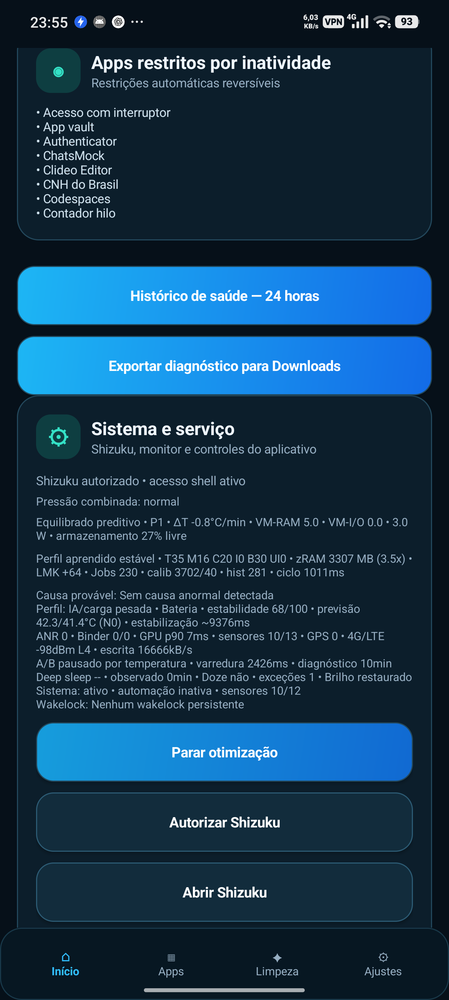
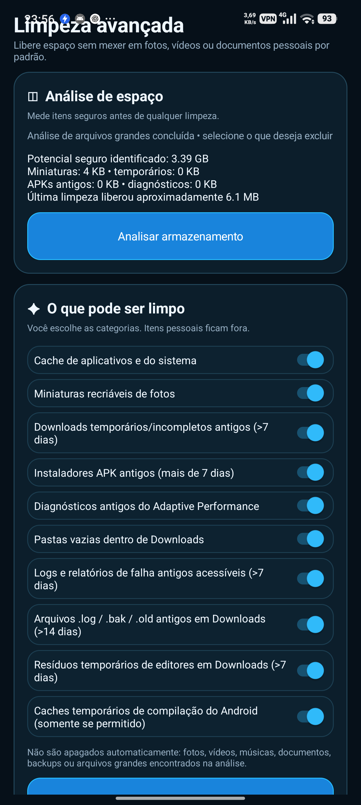
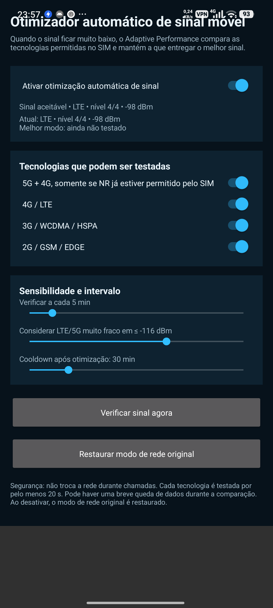

Defina uma meta para o fim do dia e deixe a economia acompanhar seu uso. A versão 1.8.7 mantém o Adaptive Performance focado em otimização, bateria e temperatura. A ferramenta de divulgação para Reddit agora é distribuída em um APK separado. Baixar o app de divulgação para Reddit.

O aplicativo combina aprendizado de uso, proteção térmica, memória e economia de bateria em uma interface simples, sem esconder as ferramentas técnicas de quem prefere ajustar tudo manualmente.
Compara perfis econômicos usando bateria, temperatura, CPU, RAM, consumo estimado e estado da tela.
Escolha a porcentagem mínima e o horário. O app calcula um orçamento de consumo por hora e adapta a economia.
Acompanha tendências de temperatura e usa níveis graduais de proteção para reduzir aquecimento excessivo.
Compactação de memória, proteção contra thrashing, limites adaptativos e detecção de crescimento anormal.
Deep sleep, Doze, wakeups e tarefas em segundo plano são coordenados conforme o contexto de uso.
Com sinal fraco, compara as tecnologias permitidas pelo SIM — 5G, 4G, 3G e 2G — em testes mais rápidos, sem trocar durante chamadas.
Limita atualizações de localização em segundo plano com a tela apagada. Restaura a configuração ao voltar a usar o aparelho ou conectar o carregador.
Acompanha a queda recente do nível da bateria e estima o tempo restante; a previsão é aproximada e melhora após algum tempo de uso.
Controle manual de recursos térmicos, CPU, memória, limpeza, congelamento, diagnósticos e outros módulos.
Com uma meta de carga e horário, o modo Automático estima o ritmo de consumo. Quando a meta fica distante, ele pode intensificar a economia; com folga, evita restrições desnecessárias.
Capturas reais do projeto. A interface e os recursos podem variar conforme Android, fabricante e permissões.


O otimizador confirma o sinal fraco em 10 segundos e testa cada tecnologia por 10 segundos. A verificação padrão é de 1 minuto e o intervalo mínimo entre otimizações é 5 minutos.
Ative a opção na tela do otimizador de sinal. Com a tela apagada, o limite é elevado a 15 minutos; ao acender a tela ou conectar o carregador, a configuração anterior é restaurada. Geocercas e rastreamento podem atualizar mais tarde.
O Adaptive Performance testa apenas modos permitidos no perfil do SIM. A disponibilidade de 2G, 3G, 4G e 5G depende do aparelho, ROM e operadora.
Use a versão mais recente publicada em Releases neste repositório.
Autorize a instalação do APK pelo navegador ou gerenciador de arquivos quando o Android solicitar.
O app funciona parcialmente sem ele, mas os controles avançados dependem de privilégios de shell.
Conheça os modos Automático e Avançado e ajuste a estratégia ao seu aparelho e à sua rotina.
Baixar Adaptive PerformancePergunte sobre instalação, Shizuku, bateria, temperatura, RAM ou modos.